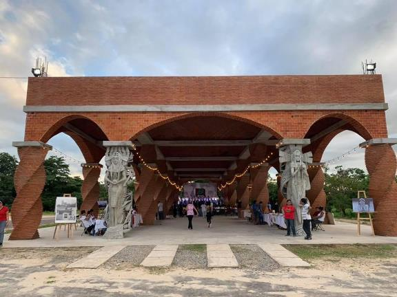
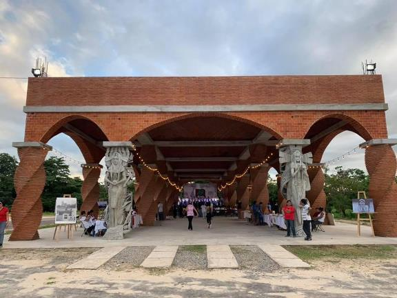

Referencias:
Berners, T. (1969, December 31). LA EVOLUCION DEL TIEMPO DE LA WED 1.0 A LA WED 4.0. timeline. Timetoast. Retrieved October 24, 2022, from https://www.timetoast.com/timelines/la-evolucion-del-tiempo-de-la-wed-1-0-a-la-wed-4-0
Nombre: Diana Vanessa Alor Aguilar
Lugar de Nacimiento: Minatitlán
Descripción de porque decidiste estudiar Sistemas Computacionales: Porqu茅 no qued茅 en negocios internacionales (no mentira) porqu茅 me gusta la carrera y me gusta todo lo relacionado con base de datos
Menciona las expectativas que tienes del curso: Mi expectativa del curso, es que sea explicativa y que aprendamos lo suficiente del curso.

Nombre:
Lugar de Nacimiento:
Descripción de porque decidiste estudiar Sistemas Computacionales:
Menciona las expectativas que tienes del curso:

Nombre: Lucia Aura Mendez Martinez
Lugar de Nacimiento: Coatzacoalcos
Descripción de porque decidiste estudiar Sistemas Computacionales: Decidí estudiar ISC, porque los temas que se ven en la carrera son de mi interes.
Menciona las expectativas que tienes del curso: Espero clases interactivas que me ayudan a practicar sobre el tema.

 



Berners, T. (1969, December 31). LA EVOLUCION DEL TIEMPO DE LA WED 1.0 A LA WED 4.0. timeline. Timetoast. Retrieved October 24, 2022, from https://www.timetoast.com/timelines/la-evolucion-del-tiempo-de-la-wed-1-0-a-la-wed-4-0